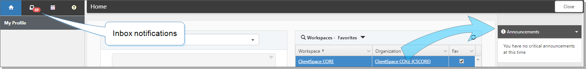

The
From the Home page, notifications are displayed in two areas:
Critical unread notifications appear on the right under Announcements. These messages continue to show as critical until they are dismissed.
Inbox notifications appear on the left. These are messages that are sent to you as the To recipient.

To view Announcements:
When the counter badge is present, you have unread notifications.
To view unread messages, on the right, expand Announcements.
The list of messages displays.
To open the message, select it. Click Close when done.
The message continues to show as critical until you dismiss it.
To dismiss critical messages, click Dismiss All. You can also read it through the Inbox, which dismisses critical messages.
To view your Inbox notifications:
The counter on the Inbox icon displays the number of unread messages in which you are in the To field.
Click (your Inbox).
Notifications display with the list and reading pane.
Select an item to read the notification. As you read through the messages, they are marked as Read.
After you have read through the critical announcements, they no longer display in the Announcements panel (on the right of your screen).
To bulk mark messages as Read:
Select the message or messages by selecting .
Click ... (More), and select an action:
Mark as read
Mark as unread
Move selected items to trash
Move all items to trash
You can also select similar actions in the reading pane.
As notifications are read, the counter changes to display the count of active unread items.
Topics in this section